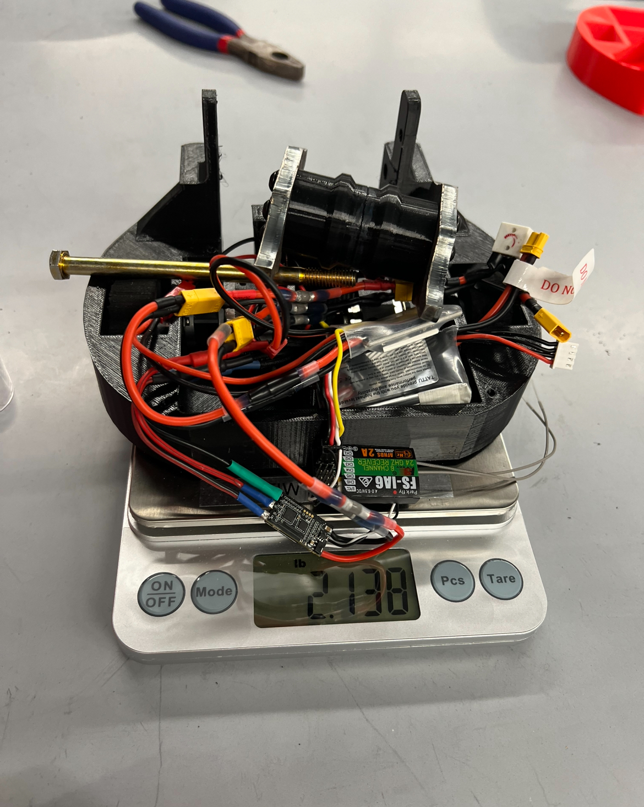
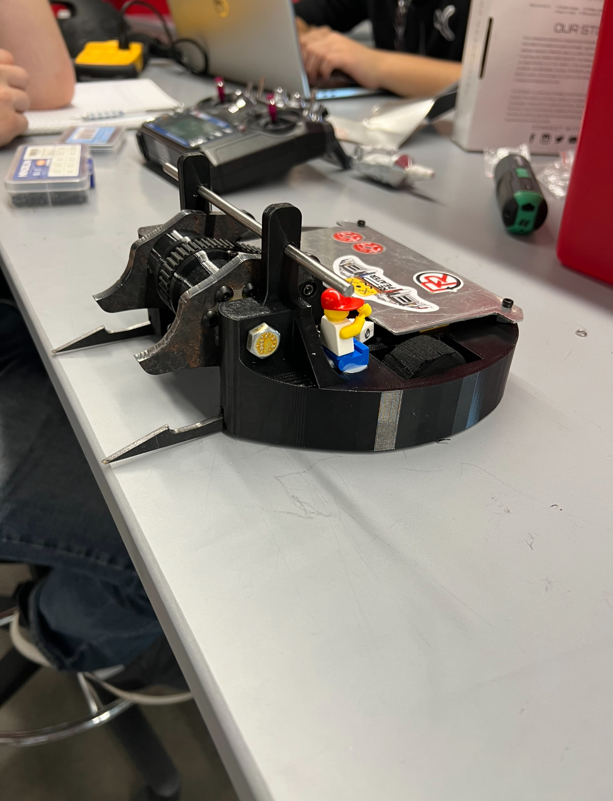
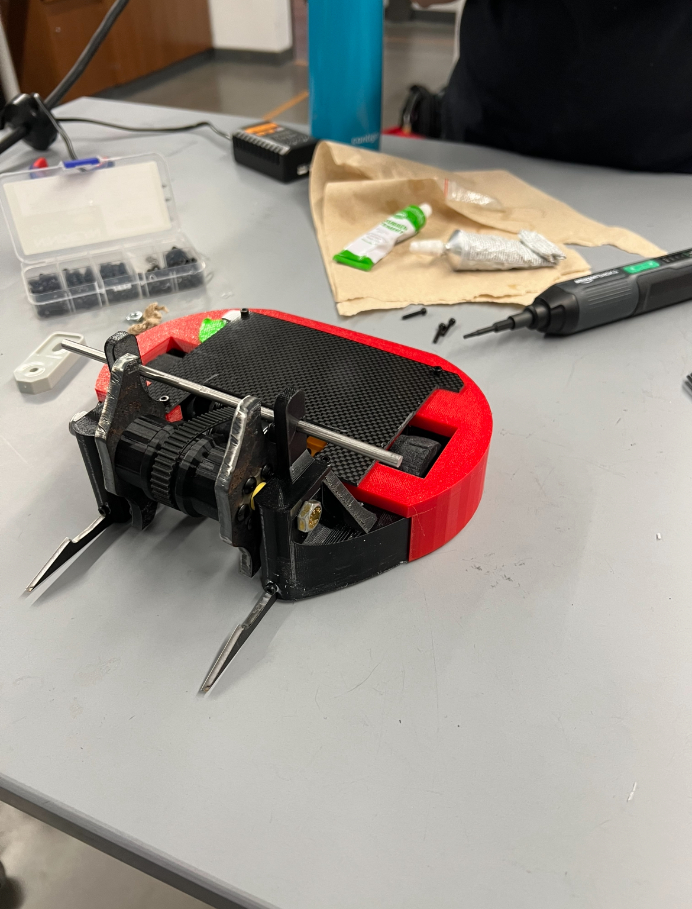
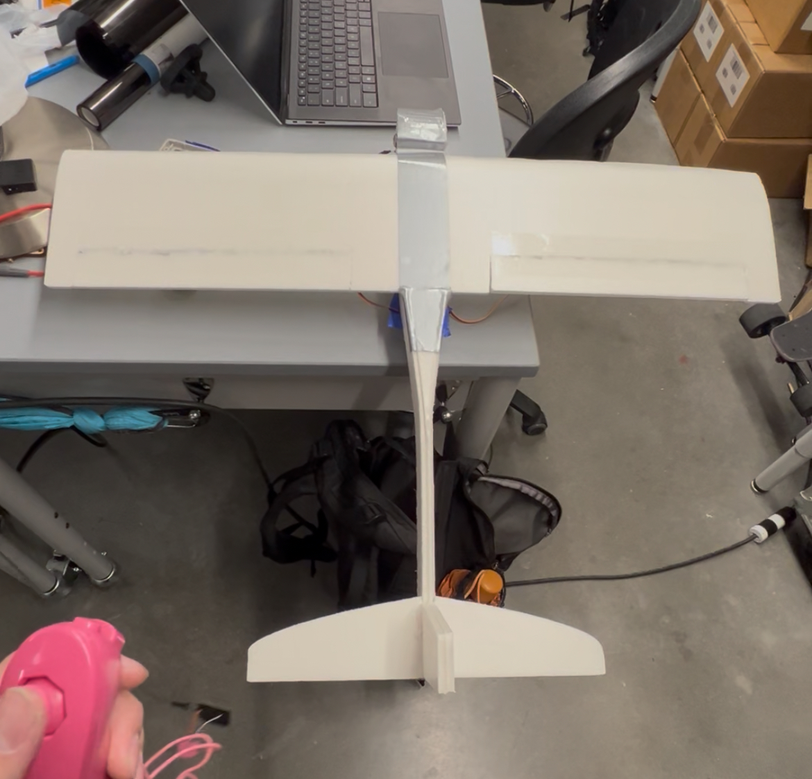
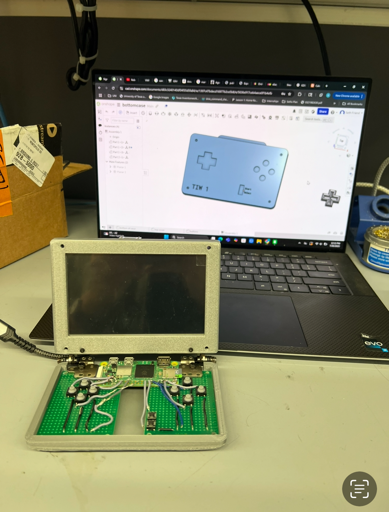
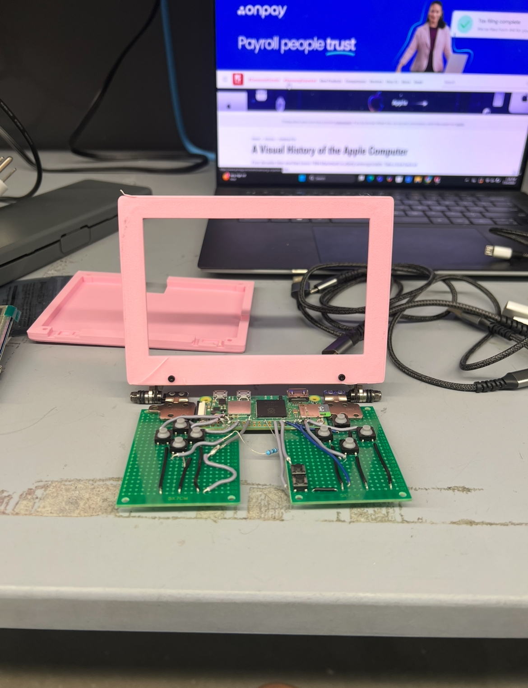
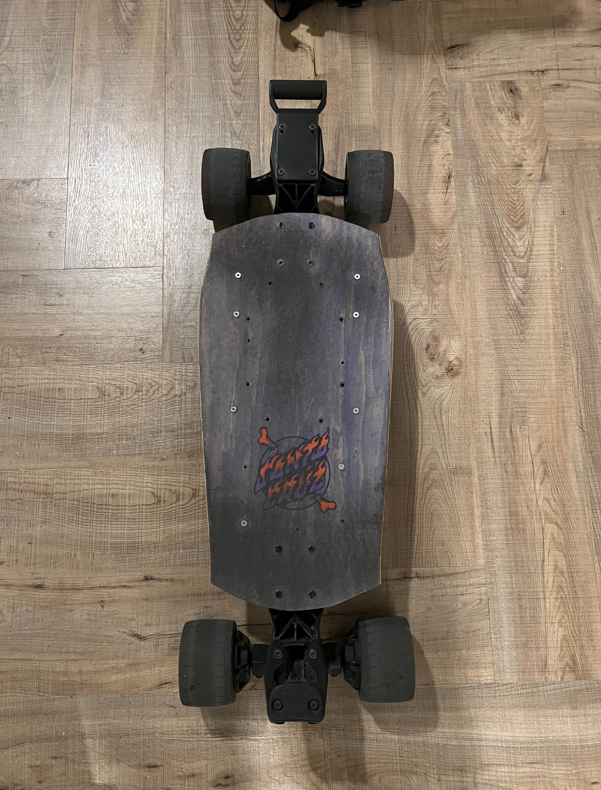
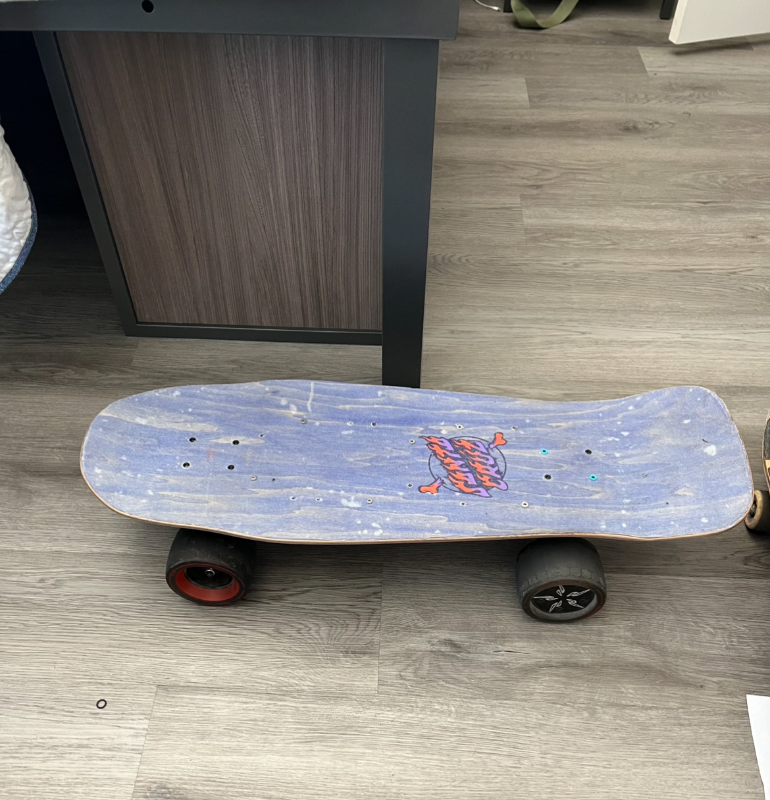
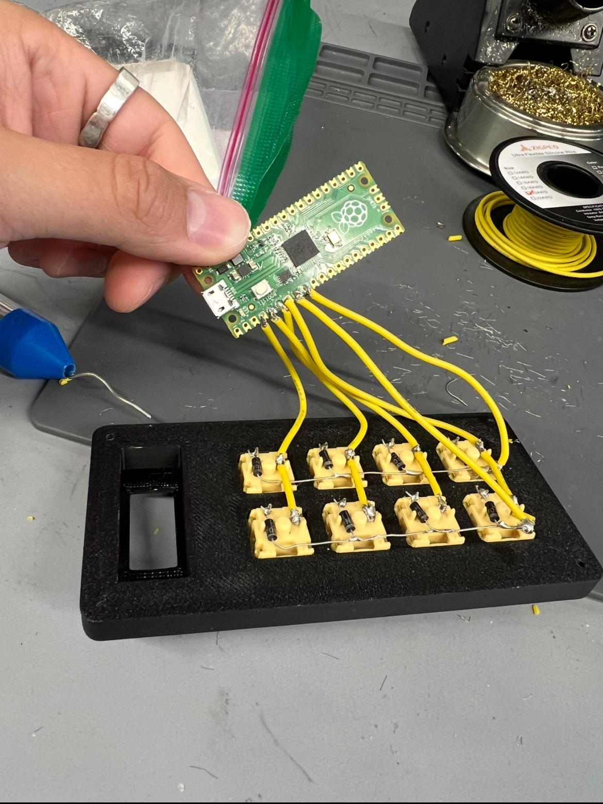
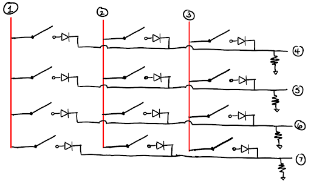

projects
Humanoid Robot
Architected and built a custom 7 kg bipedal humanoid robot from the ground up, drawing inspiration from Disney's Versatile Motion Priors (VMP) research. Working alongside a former Amazon colleague, I led the lower-body mechanics, simulation environment, training policy, software, electronics architecture, and torso design.
The hardware is a 20 DoF system — 5 DoF per leg, 4 per arm, 2 for the head — powered by GIM6010-8 BLDC motors with integrated 9:1 gear reductions through ODrive controllers. All motor controllers communicate over CAN bus. The chassis is machined aluminum, PETG, and TPU.
On the software side, I've replicated the robot in NVIDIA Isaac Sim as a digital twin, trained an RL policy for standing stabilization, and am currently working through sim-to-real transfer. PID-tuned all leg motors. Next: finishing the ROS 2 control stack and deploying the policy to the onboard Raspberry Pi.


Battle Bots
Competed in Texas Robo Rumble twice as team lead, each year building a vertical spinner. Year two was significantly better — I designed both the chassis and electrical system, chose TPU throughout for energy absorption, and added an extra layer of armor over year one. We made it to the quarterfinals.
the weapon
Our downfall was the motor mount — the barrel of the motor spinning inside a bearing pressed into a TPU upright. Worked in testing, failed against real robots when the upright flexed under impact. If I rebuilt it, I'd use a more rigid material for the upright. An honest lesson in the gap between lab testing and competition.



Route Genie
A website that auto-generates custom climbing routes for the Kilter Board and sends them via Bluetooth to the board. Built in 24 hours at HackTx 2025. We used Gemini 2.5-Flash to generate routes as JSON — a bigger first software project for me, and one I'm glad I did.
next steps
Continuing the spirit of this project by contributing to Climbest — a more refined, further-developed version of what we built during the hackathon.


Servo Controlled Glider
A remote-controlled foam glider that steers via two underwing servos, controlled wirelessly by a pair of ESP32s over ESP-NOW. No propellers allowed by school policy — which meant I had to learn airfoil design and wireless microcontroller communication at the same time. Won first place in the staff competition.
the plane's downfall
The downfall was weight and lift. A propeller-less servo glider is a hard beginner competition, and while mine did the best, nobody really "glided" — so the student-run version of the competition was cancelled. Still proud of it.

TIW 1 — Handheld Console
Designed a handheld game console modeled after the Nintendo DS — one of my favorite consoles growing up. Built around a Raspberry Pi Zero with a custom 3D-printed enclosure and perfboard buttons. GPIONext handles input registration. Named TIW 1 because it was built as a display piece for the TIW makerspace.
buttons
Free-wiring buttons on perfboard means no easy way to guarantee alignment with slots in the enclosure — which led to many, many print iterations. Getting the screen working required boot code modifications. Next time: a custom PCB or a 3D scanner to lock in the geometry before printing.


Electric Skateboard
I've designed multiple electric skateboards. This is the final and favorite version — a short, wide drop-down deck with Loaded Longboard Zee brackets, 100 mm hub motors, custom TPU enclosures, and a silicone-dipped ESC for waterproofing. Designed in SolidWorks, assembled from a mix of off-the-shelf and custom parts.
Low deck, short wheelbase, custom carry handle. Rides lower than any commercial board I've tried, which makes it feel safer at speed and easier to foot-brake. I ride it to class every day.


2×4 Macropad
A 2×4 macropad built with a Raspberry Pi Pico, CircuitPython, and custom resin keycaps in a 3D-printed enclosure. I wired the buttons in a matrix formation — not necessary for 8 keys, but good practice for a full keyboard layout.
trials and tribulations
The main challenge was making keycaps that fit. This was a new-hire project at TIW, and the provided switches had non-standard stems with tight tolerances. I ended up printing the keycaps in SLA resin instead of FDM to get the precision needed.

